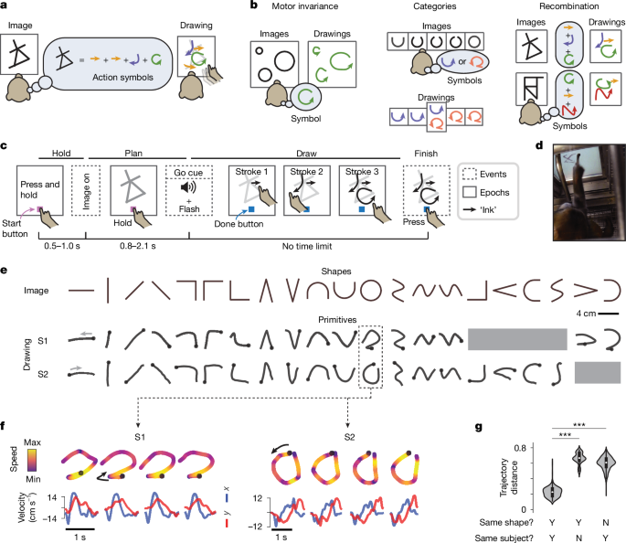
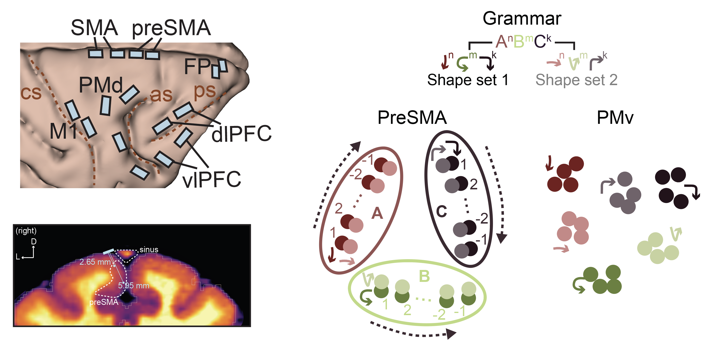
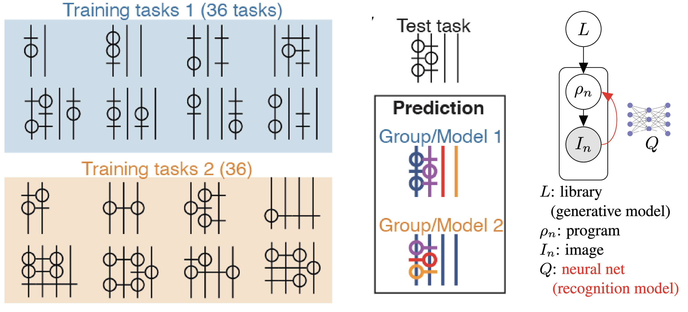
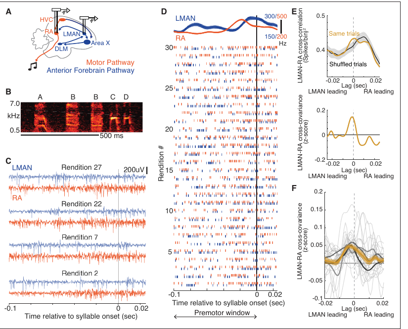
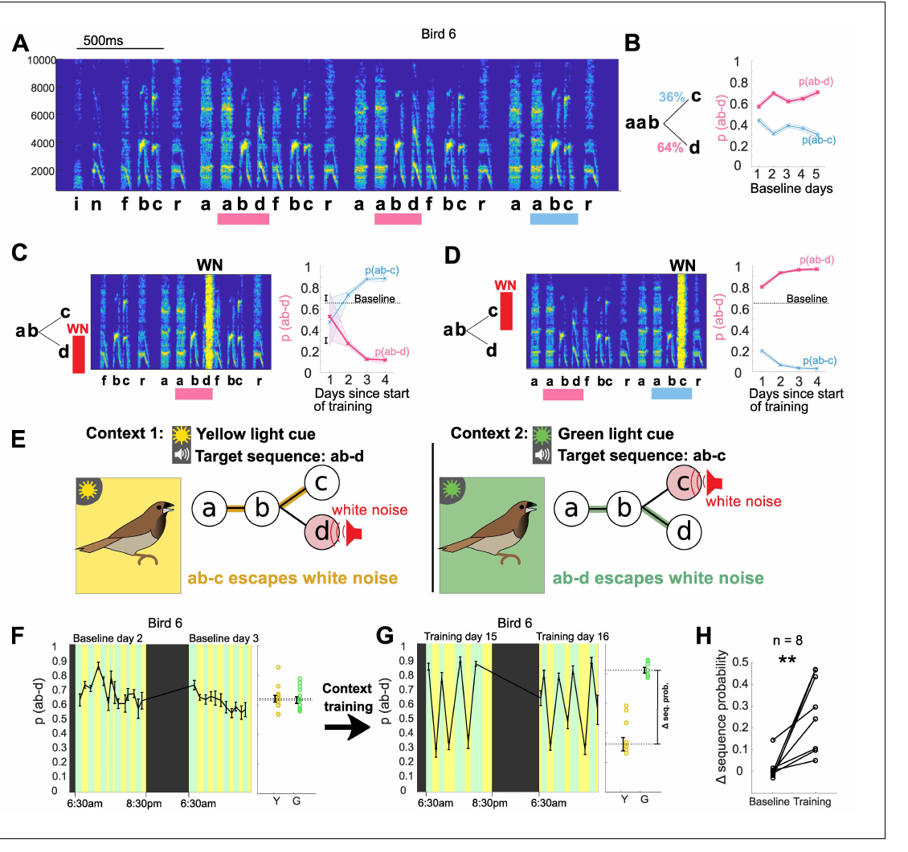
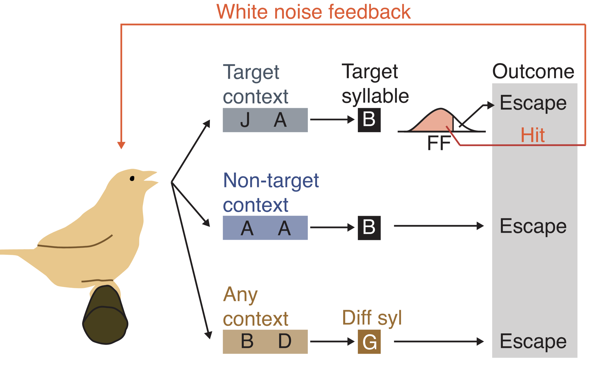

-
Nature (2026). DOI: 10.1038/s41586-026-10297-x

-
bioRxiv preprint (2026). DOI: 10.64898/2026.01.18.700235

-
Advances in Neural Information Processing Systems 33 (2020). Link

Prior work on motor skill learning in birdsong
-
eLife (2023). DOI: 10.7554/eLife.83223

-
eLife (2021). DOI: 10.7554/eLife.61610

-
Neuron (2017). DOI: 10.1016/j.neuron.2017.10.019

For an up-to-date list, see Google Scholar.